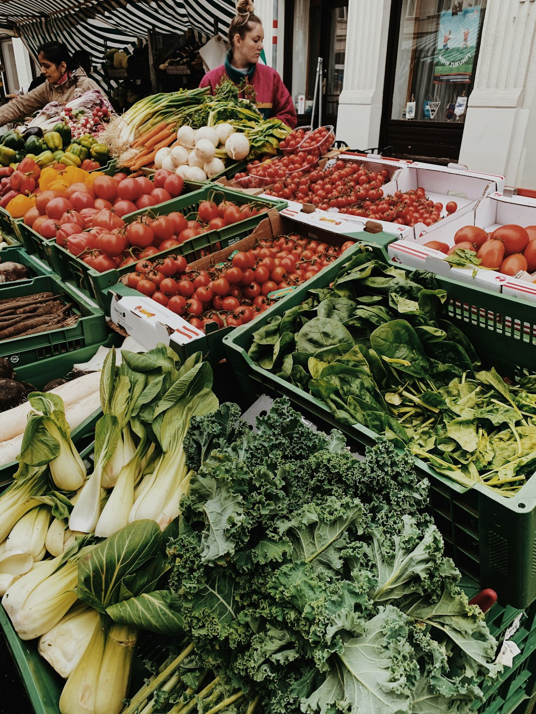
01
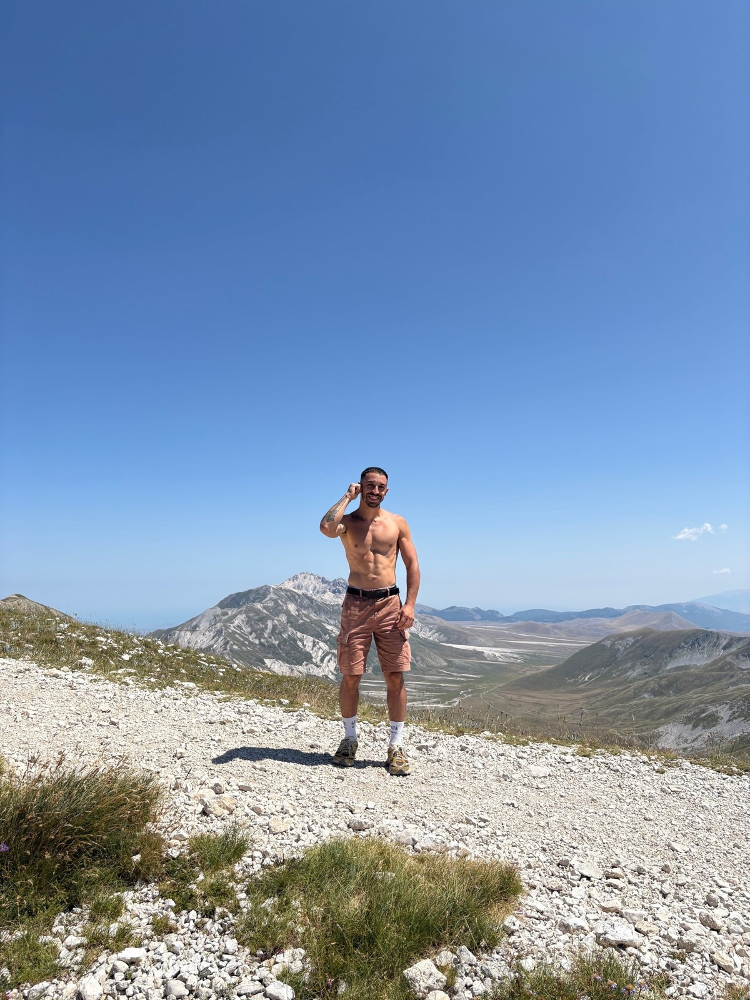
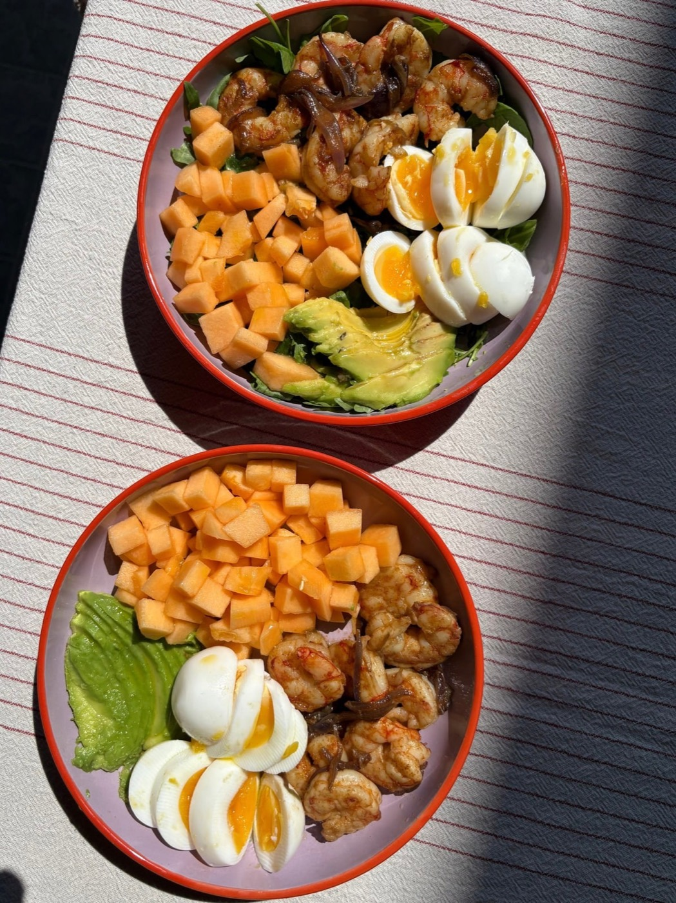
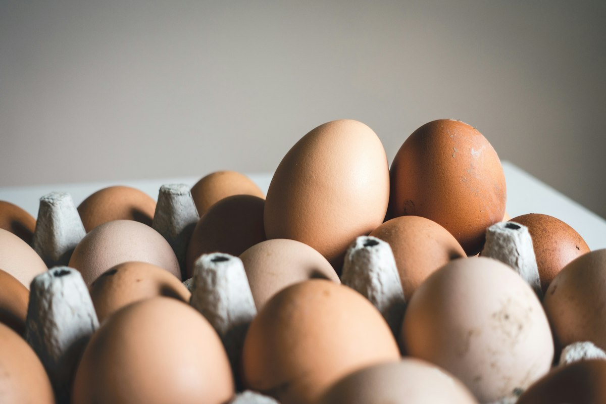
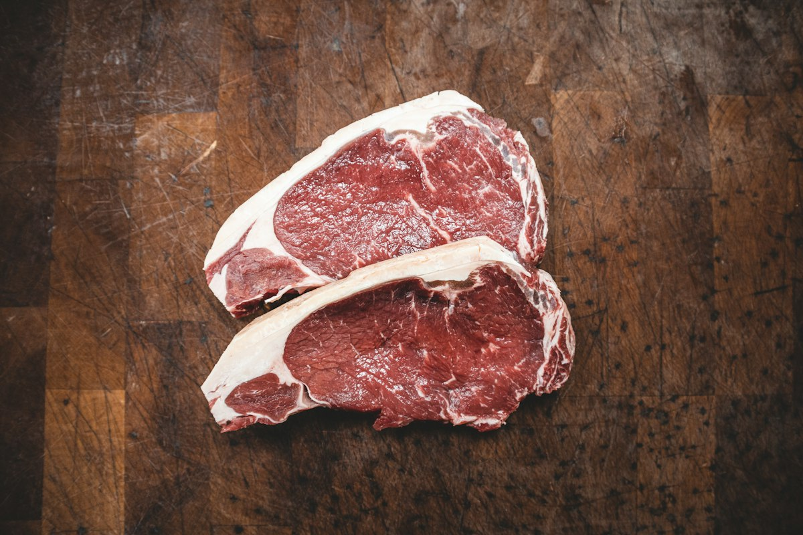
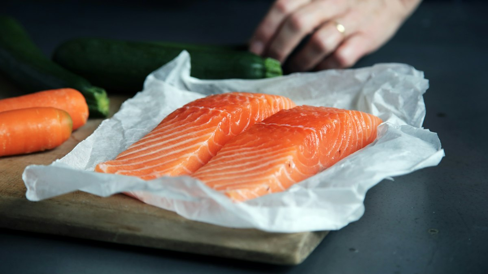
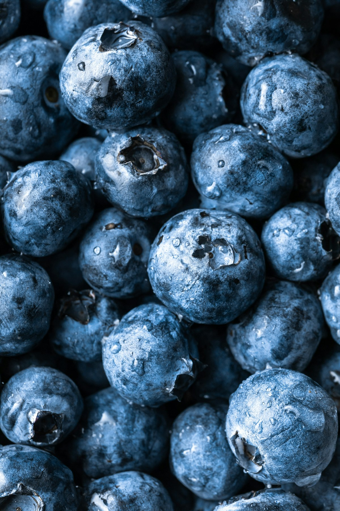
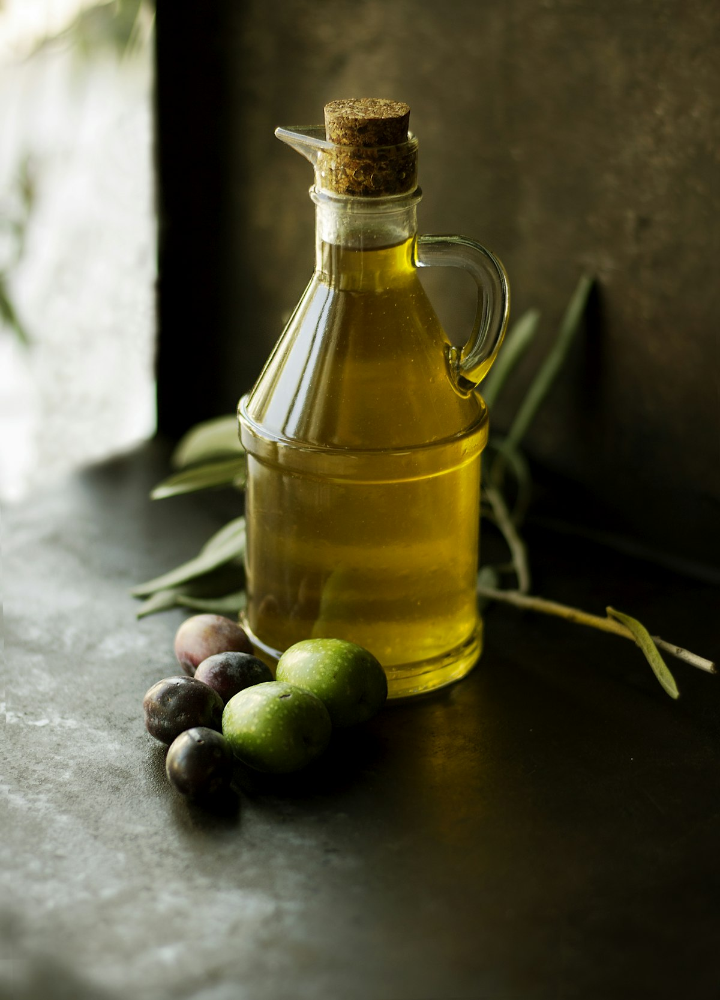
Il metodo

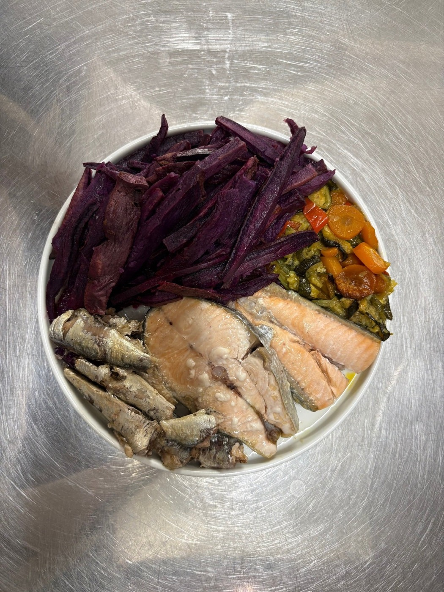
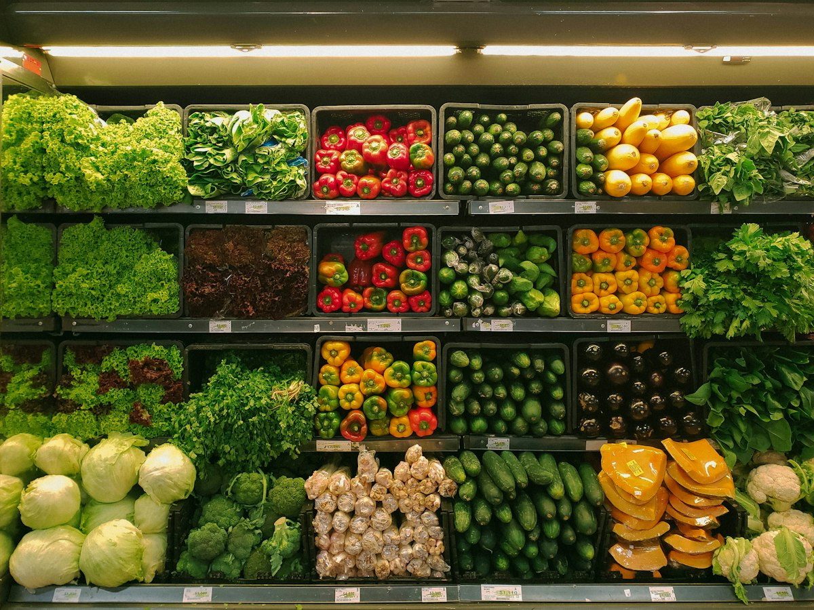
Chi sono
Ho studiato nutrizione funzionale e l'ho provata prima su di me: via il cibo industriale, dentro solo cibo vero.
+ energiapelle miglioratacorpo più forte
Risultati
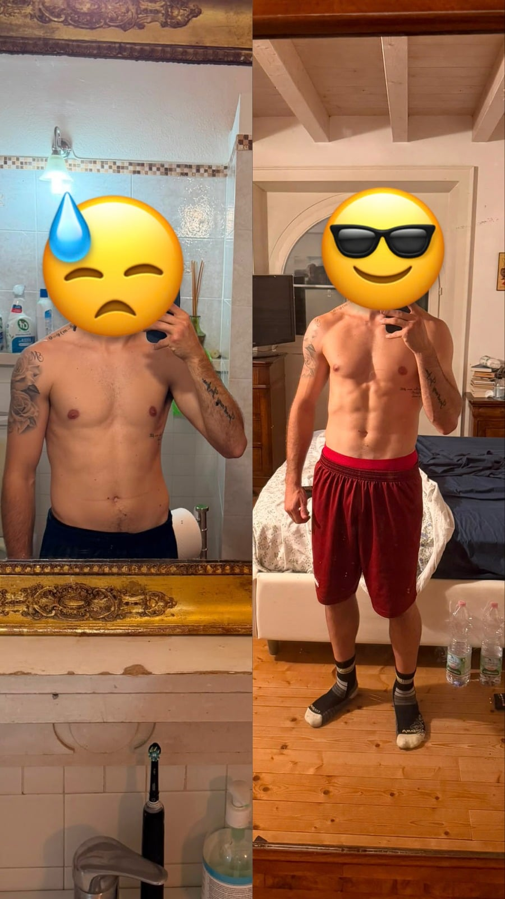
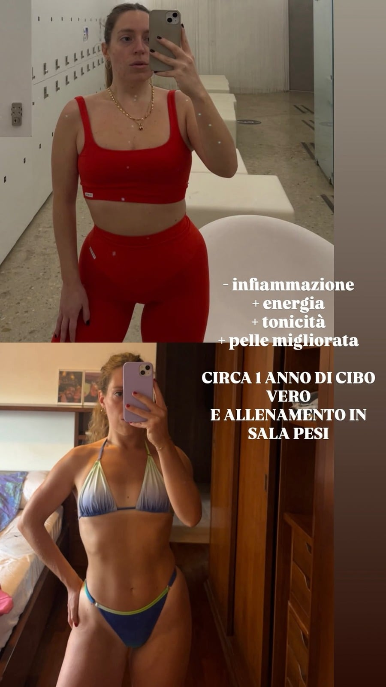
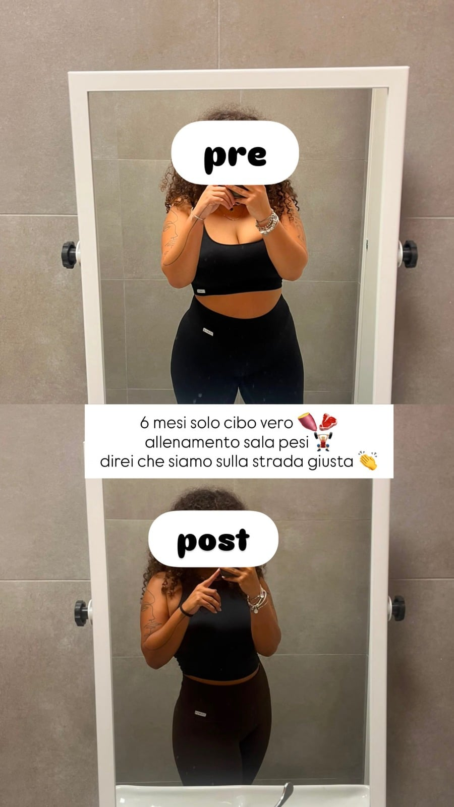
Risultati individuali, ottenuti con cibo vero e allenamento con i pesi.
su WhatsApp
dei tuoi obiettivi
dal primo pasto
No. Conta la qualità di quello che mangi, non i grammi.
No, è educazione alimentare: abitudini che puoi tenere per sempre.
Sì, tutto a distanza, ovunque tu sia.
No. Sono formato in nutrizione funzionale e condivido ciò che ho studiato e provato. Non faccio diagnosi né prescrivo diete: per patologie, rivolgiti al tuo medico.